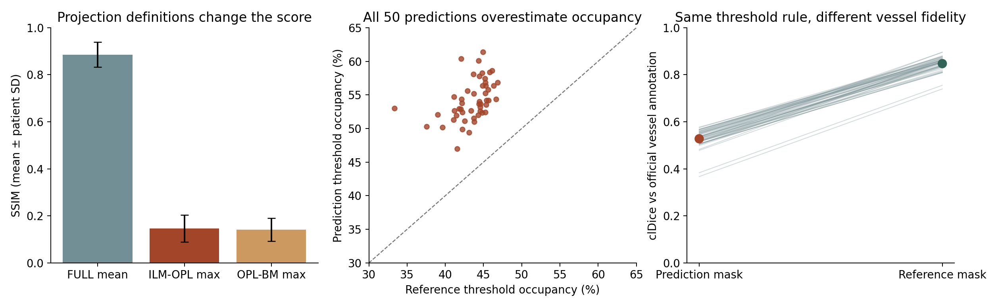
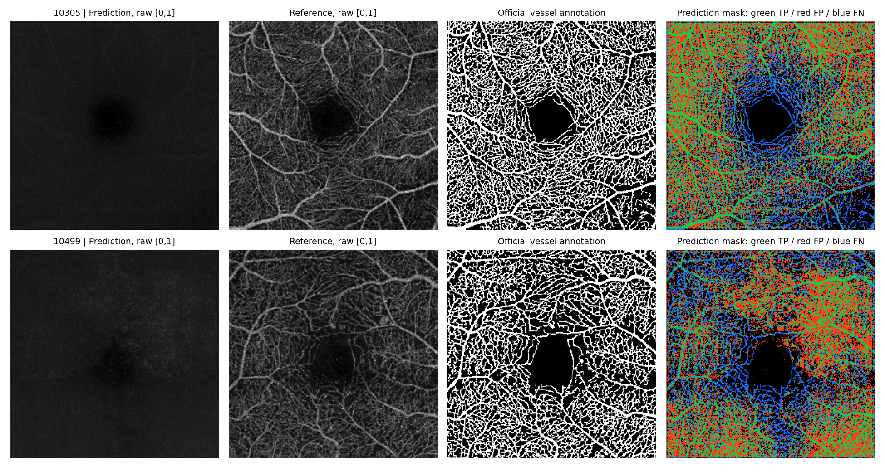

当前模型已经形成部分粗略结构，但细血管和血管背景分离仍明显不足。FULL投影SSIM为0.886，ILM–OPL投影仅0.147；平均投影的高分不足以代表血管恢复质量。
阈值法估计的预测血管占比为54.21%，参考投影为43.45%，相差10.76个百分点。50例均偏高。VDC约0.735说明区域密度趋势有一定一致性，但不能证明细血管逐像素对齐。
50例固定测试集 · 三层评价 · 2026-10-21
当前模型已经形成部分粗略结构，但细血管和血管背景分离仍明显不足。FULL投影SSIM为0.886，ILM–OPL投影仅0.147；平均投影的高分不足以代表血管恢复质量。
阈值法估计的预测血管占比为54.21%，参考投影为43.45%，相差10.76个百分点。50例均偏高。VDC约0.735说明区域密度趋势有一定一致性，但不能证明细血管逐像素对齐。

下载50例完整指标 CSV 汇总 JSON 统计图 PDF 原50例投影报告
50名患者等权平均 ± 患者间样本标准差；SSIM取0–1。所有强度指标都使用原始归一化数值，未经显示拉伸。
| 评价对象 | MAE ↓ | PSNR / dB ↑ | SSIM ↑ |
|---|---|---|---|
| 完整三维体 | 0.0139 ± 0.0032 | 28.3220 ± 1.9196 | 0.8221 ± 0.0386 |
| 逐B-scan平均 | 0.0139 ± 0.0032 | 28.4521 ± 1.9293 | 0.8261 ± 0.0385 |
| FULL 全深度均值投影 | 0.0083 ± 0.0025 | 39.7545 ± 2.4928 | 0.8858 ± 0.0530 |
| ILM–OPL 分层最大值投影 | 0.1009 ± 0.0251 | 17.5916 ± 2.2835 | 0.1466 ± 0.0577 |
| OPL–BM 分层最大值投影 | 0.0832 ± 0.0158 | 19.0147 ± 1.9073 | 0.1411 ± 0.0489 |
这一层统一使用ILM–OPL投影。VDE/VDC参考TransPro的定义；我们的投影、归一化、数据划分及掩膜协议已单独固定，不能与论文表格直接横向排名。
| 指标 | 结果 | 含义 |
|---|---|---|
| MAE-V ↓ | 0.0764 ± 0.0220 | 血管权重1，背景权重0.1 |
| PSNR-V / dB ↑ | 18.1935 ± 2.5177 | 两幅图使用相同官方血管掩膜 |
| SSIM-V ↑ | 0.4689 ± 0.1190 | 共同掩膜会改变图像结构，不能直接与未加权SSIM比较 |
| VDE ↓ | 0.1076 ± 0.0293 | 预测与参考各自按全局均值二值化；血管占比差的绝对值 |
| VDC ↑ | 0.7349 ± 0.0843 | 16×16不重叠区域的占比向量相关性 |
| PCC ↑ | 0.3706 ± 0.0442 | 原始ILM–OPL投影的像素相关性 |
| 指标 | 结果 |
|---|---|
| B-scan LPIPS ↓ | 0.2315 ± 0.0285 |
| FULL LPIPS ↓ | 0.2955 ± 0.0813 |
| ILM–OPL LPIPS ↓ | 0.7229 ± 0.0473 |
| OPL–BM LPIPS ↓ | 0.6161 ± 0.0514 |
| ILM–OPL Dice ↑ | 0.5395 ± 0.0382 |
| ILM–OPL IoU ↑ | 0.3702 ± 0.0338 |
| ILM–OPL Precision ↑ | 0.4795 ± 0.0517 |
| ILM–OPL Recall ↑ | 0.6241 ± 0.0421 |
| ILM–OPL clDice ↑ | 0.5279 ± 0.0396 |
| ILM–OPL FID ↓（50例整体） | 271.6855 |
Dice、IoU和clDice比较“预测投影按自身全局均值二值化”的掩膜与官方血管标注。它们是阈值法的二维诊断指标，不是固定分割网络结果，也不是三维拓扑评价。
作为处理链的参照，真实Z256投影经过同样阈值法后，与官方标注的Dice为 0.8288 ± 0.0298，clDice为 0.8474 ± 0.0294。这说明阈值提取本身也有误差；该参照不等于理论上界。
FID使用预训练InceptionV3的2048维特征；50例协方差秩不足，结果仅作探索性补充。FID不提供逐例分数，也不能单独证明细血管或临床结构恢复良好。

定义与实现来源：TransPro §4.2 · OCTA-500 §3.3 · LPIPS · clean-fid · clDice
点击病例编号查看原报告的显示增强图；增强只用于观看。血管掩膜链接提供原始二值结果。
50 / 50| 病例 | 疾病 | 3D SSIM | 投影SSIM | 投影LPIPS | VDE | VDC | Dice | clDice | 掩膜 |
|---|---|---|---|---|---|---|---|---|---|
| 10305 | NORMAL | 0.8147 | 0.1055 | 0.7634 | 0.1227 | 0.6950 | 0.5503 | 0.5383 | 预测 / 标注 |
| 10307 | NORMAL | 0.7926 | 0.1016 | 0.7580 | 0.0865 | 0.6991 | 0.5527 | 0.5468 | 预测 / 标注 |
| 10317 | DR | 0.8692 | 0.3225 | 0.6428 | 0.1966 | 0.7309 | 0.4212 | 0.3834 | 预测 / 标注 |
| 10318 | NORMAL | 0.8134 | 0.0901 | 0.7861 | 0.1223 | 0.7826 | 0.5751 | 0.5668 | 预测 / 标注 |
| 10321 | NORMAL | 0.8242 | 0.1480 | 0.7447 | 0.1159 | 0.8393 | 0.5657 | 0.5530 | 预测 / 标注 |
| 10322 | NORMAL | 0.8350 | 0.1310 | 0.7254 | 0.1054 | 0.7438 | 0.5315 | 0.5202 | 预测 / 标注 |
| 10325 | AMD | 0.7206 | 0.1063 | 0.7215 | 0.0765 | 0.4655 | 0.5113 | 0.5024 | 预测 / 标注 |
| 10326 | NORMAL | 0.8190 | 0.1143 | 0.7662 | 0.1645 | 0.8318 | 0.5775 | 0.5694 | 预测 / 标注 |
| 10327 | NORMAL | 0.8136 | 0.2079 | 0.6758 | 0.0718 | 0.8080 | 0.5410 | 0.5303 | 预测 / 标注 |
| 10328 | NORMAL | 0.7900 | 0.0700 | 0.7997 | 0.1155 | 0.6917 | 0.5646 | 0.5602 | 预测 / 标注 |
| 10330 | NORMAL | 0.8232 | 0.1087 | 0.7464 | 0.1268 | 0.7336 | 0.5508 | 0.5360 | 预测 / 标注 |
| 10331 | NORMAL | 0.8356 | 0.0898 | 0.7439 | 0.0772 | 0.5978 | 0.5545 | 0.5496 | 预测 / 标注 |
| 10332 | NORMAL | 0.8746 | 0.2132 | 0.6650 | 0.1020 | 0.7533 | 0.5190 | 0.4990 | 预测 / 标注 |
| 10341 | NORMAL | 0.8192 | 0.1114 | 0.7431 | 0.1110 | 0.7614 | 0.5763 | 0.5671 | 预测 / 标注 |
| 10342 | NORMAL | 0.8255 | 0.0866 | 0.7679 | 0.1574 | 0.7886 | 0.5825 | 0.5753 | 预测 / 标注 |
| 10347 | NORMAL | 0.8207 | 0.1133 | 0.7452 | 0.0752 | 0.7220 | 0.5425 | 0.5325 | 预测 / 标注 |
| 10351 | NORMAL | 0.8474 | 0.1331 | 0.7252 | 0.0817 | 0.7089 | 0.5503 | 0.5378 | 预测 / 标注 |
| 10355 | NORMAL | 0.8842 | 0.2753 | 0.6467 | 0.0925 | 0.8296 | 0.5193 | 0.5051 | 预测 / 标注 |
| 10356 | NORMAL | 0.8647 | 0.1994 | 0.6988 | 0.0775 | 0.7522 | 0.5164 | 0.5062 | 预测 / 标注 |
| 10358 | NORMAL | 0.8294 | 0.0928 | 0.7924 | 0.1022 | 0.7717 | 0.5651 | 0.5558 | 预测 / 标注 |
| 10359 | NORMAL | 0.8235 | 0.1605 | 0.6921 | 0.0544 | 0.8325 | 0.5156 | 0.5059 | 预测 / 标注 |
| 10362 | NORMAL | 0.8297 | 0.1240 | 0.7413 | 0.1335 | 0.7791 | 0.5698 | 0.5591 | 预测 / 标注 |
| 10363 | NORMAL | 0.8467 | 0.1839 | 0.7125 | 0.0956 | 0.7844 | 0.5349 | 0.5235 | 预测 / 标注 |
| 10365 | DR | 0.8294 | 0.1419 | 0.7376 | 0.1254 | 0.7506 | 0.5767 | 0.5653 | 预测 / 标注 |
| 10367 | CNV | 0.8206 | 0.1157 | 0.7455 | 0.0631 | 0.6531 | 0.5297 | 0.5153 | 预测 / 标注 |
| 10379 | DR | 0.8452 | 0.1471 | 0.7484 | 0.1835 | 0.8490 | 0.5565 | 0.5367 | 预测 / 标注 |
| 10394 | NORMAL | 0.8076 | 0.1099 | 0.7612 | 0.0932 | 0.6579 | 0.5389 | 0.5269 | 预测 / 标注 |
| 10395 | NORMAL | 0.8413 | 0.1874 | 0.7053 | 0.0804 | 0.7295 | 0.5273 | 0.5162 | 预测 / 标注 |
| 10404 | NORMAL | 0.8202 | 0.1376 | 0.7296 | 0.1347 | 0.7978 | 0.5669 | 0.5567 | 预测 / 标注 |
| 10410 | NORMAL | 0.8449 | 0.1644 | 0.7146 | 0.0714 | 0.7570 | 0.5390 | 0.5300 | 预测 / 标注 |
| 10415 | NORMAL | 0.8676 | 0.2807 | 0.6242 | 0.1441 | 0.7479 | 0.5294 | 0.5152 | 预测 / 标注 |
| 10420 | NORMAL | 0.8283 | 0.1089 | 0.7334 | 0.0908 | 0.7691 | 0.5549 | 0.5433 | 预测 / 标注 |
| 10421 | DR | 0.8210 | 0.1166 | 0.7874 | 0.1358 | 0.7171 | 0.5272 | 0.5162 | 预测 / 标注 |
| 10423 | NORMAL | 0.8108 | 0.1222 | 0.7320 | 0.1250 | 0.7838 | 0.5874 | 0.5773 | 预测 / 标注 |
| 10425 | NORMAL | 0.8127 | 0.1134 | 0.7461 | 0.0851 | 0.7903 | 0.5654 | 0.5521 | 预测 / 标注 |
| 10430 | NORMAL | 0.6298 | 0.1417 | 0.7106 | 0.1150 | 0.7044 | 0.5349 | 0.5209 | 预测 / 标注 |
| 10433 | DR | 0.8204 | 0.1157 | 0.7558 | 0.1087 | 0.7570 | 0.5456 | 0.5348 | 预测 / 标注 |
| 10446 | NORMAL | 0.8071 | 0.1182 | 0.7297 | 0.1004 | 0.7044 | 0.5696 | 0.5666 | 预测 / 标注 |
| 10448 | NORMAL | 0.8159 | 0.0768 | 0.7934 | 0.0881 | 0.7896 | 0.5596 | 0.5473 | 预测 / 标注 |
| 10454 | DR | 0.8152 | 0.3047 | 0.5711 | 0.1276 | 0.3977 | 0.3648 | 0.3671 | 预测 / 标注 |
| 10460 | NORMAL | 0.8022 | 0.1502 | 0.7082 | 0.1111 | 0.6919 | 0.5349 | 0.5143 | 预测 / 标注 |
| 10467 | DR | 0.8407 | 0.1505 | 0.7382 | 0.1310 | 0.6403 | 0.4822 | 0.4784 | 预测 / 标注 |
| 10472 | NORMAL | 0.8471 | 0.0918 | 0.7623 | 0.1000 | 0.7756 | 0.5677 | 0.5615 | 预测 / 标注 |
| 10475 | NORMAL | 0.8533 | 0.2420 | 0.6229 | 0.1161 | 0.7687 | 0.5370 | 0.5167 | 预测 / 标注 |
| 10476 | NORMAL | 0.8439 | 0.1541 | 0.6938 | 0.1023 | 0.7750 | 0.5375 | 0.5052 | 预测 / 标注 |
| 10484 | NORMAL | 0.7862 | 0.1624 | 0.6517 | 0.1053 | 0.7279 | 0.5224 | 0.5067 | 预测 / 标注 |
| 10494 | NORMAL | 0.8253 | 0.1644 | 0.7068 | 0.1150 | 0.7344 | 0.5385 | 0.5281 | 预测 / 标注 |
| 10497 | NORMAL | 0.7756 | 0.1186 | 0.7179 | 0.0779 | 0.7667 | 0.5427 | 0.5354 | 预测 / 标注 |
| 10498 | NORMAL | 0.8277 | 0.1789 | 0.7041 | 0.0999 | 0.8021 | 0.5577 | 0.5523 | 预测 / 标注 |
| 10499 | DR | 0.8480 | 0.1267 | 0.7072 | 0.0860 | 0.6011 | 0.4911 | 0.4827 | 预测 / 标注 |